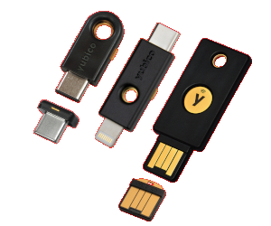

Modern SSH Security: Best Practices
Jean Pierre LeJacq
Quoin Inc
email: jeanpierre.lejacq@quoininc.com
presentation: https://github.com/jplejacq/self-2020-ssh
OpenSSH is ubiquitous in the open source community for devops and
development. It is unfortunately also one of the most common
attack vectors. We present modern OpenSSH features for securing
connections that are rarely used and poorly understood. We also
give guidance on configuring the client and server to enhance the
value of these features. We also demonstrate compliance with NIST
SSH guidelines. This is the one of the simplest things you can do
to secure your infrastructure.
-
OpenSSH certificates to simplify credential management.
-
Certificates and DNSSEC SSHFP to eliminate man-in-the-middle attacks.
-
Matching patterns for enhanced access control.
-
Integration of OpenSSH and GnuPG authentication keys.
-
Storage of keys on hardware security tokens using GnuPG and the
brand new FIDO2 capability.
-
Optimal Cryptographic selection including the new quantum
computing resistant keys.
Jean Pierre is a founding partner of Quoin, Inc., a consulting
company specializing in open-source software. Jean Pierre has over
25 year experience in software development and DevOps, focusing on
security best practices. He has presented numerous times at SELF on a wide range of topics.
Topics
- Vulnerabilities
- Configuration
- Crypto
- Authentication
- Hardware security tokens
- References
Introduction
OpenSSH (OpenBSD Secure Shell)
first released in 1999 as fork of Tatu Ylönen's SSH.
Functionality
- Remote access
- Remote copy using scp (deprecated) and sftp
- Remote execution
- Port forwarding
- SOCKS proxy
- Agent forwarding (deprecated) and ProyJump
- Whole ecco system built on top of OpenSSH
Security guidelines and standards
NIST has excellent resources on vulnerabilities
Vulnerabilities
Vulnerability is generally related to SSH based access (NISTIR
7966).
- Vulnerable SSH implementation
- Improperly configured access controls
- Stolen, leaked, derived, and unterminated SSH user keys
- Backdoors (unaudited user keys)
- Unintended usage of user keys
- Pivoting
- Lack of knowledge and human errors
Vulnerable SSH implementations
Guideline 1: Keep your OpenSSH client/server up to date.
-
Latest version is 8.3.
-
Project generally releases once or twice a year.
-
Since Heartbleed, the project has been more aggressive removing
weak crypto and features.
-
Also adding new features - FIDO authentication, new crypto, ...
Improperly configured access control
Guideline 2: Don't rely on out of box configuration.
-
Most distribution will tend to lean towards maximizing ease of
use instead of security.
-
Lots of pressure from user to "just let me connect".
-
Server has 87 configuration options.
-
Guideline 2.1: Organizing options into functional areas.
-
Guideline 2.2: Decompose configuration file using
"Include" option.
-
Guideline 2.3: Organize options from most specific
to most general. Recall, first declaration wins, except for
"Match" option.
-
Guideline 2.4: Default to no access with relaxation
on "Match" option.
Improperly configured access control
Extract from /etc/ssh/sshd_config
### @defgroup User Authentication @{
# @default AuthenticationMethods any
AuthenticationMethods="none"
# @default PubkeyAuthentication yes
PubkeyAuthentication="no"
...
###@}
Match Host localhost,*.quoininc.com
AuthenticationMethods="publickey"
PubkeyAuthentication="yes"
Improperly configured access control
Guideline 3: Verify and audit configuration.
- sshd
-t option to test syntax.
- sshd
-T and -C option to verify access.
-
Lynis has some basic checks.
-
ssh-audit will
audit the crypto.
-
OpenSCAP has direct
integration to NIST standards.
Crypto
Lot's of focus on this but likely not as important a threat vector
as other configuration options.
-
Definitely above my paygrade, I rely mostly on NIST standard and
stribika.github.io.
-
Guideline 3: Use modern crypto provided by OpenSSH.
-
Guideline 3.1: For internal servers, specify only
single algorithm for each of the options.
-
Guideline 3.2: Guard against degrading to unsafe
algorithms
-
Guideline 3.3: Specify configuration for both
client and server. algorithms
Crypto
Guideline 3.4: Recommended algorithms
- key exchange algorithm (KEX)
- curve25519-sha256@libssh.org
- encryption algorithm (cipher)
- chacha20-poly1305@openssh.com
- message authentication code algorithms (MAC)
- hmac-sha2-512-etm@openssh.com
- host and user key algorithm
- ssh-ed25519-cert-v01@openssh.com
Since version 8.0, Experimental support for KEX quantum-resistant
algorithm with sntrup4591761x25519-sha512@tinyssh.org.
Authentication
Likely the primary attack vector. Alternative
- KbdInteractiveAuthentication and PasswordAuthentication
- PubkeyAuthentication
- Certificate based PubkeyAuthentication
- FIDO based PubkeyAuthentication
Authentication
Vulnerabilities based on distribution and management of credentials.
- Password based requires saving password on all servers.
- Public key requires saving public half of key on all servers.
- Public key have no life time or limit on how they can be used.
- Difficult to manage and audit at scale.
Authentication - certificates
Guideline 4: Use OpenSSH certificates for both host and
user authentication.
- Available since version 5.4
- Much simpler and lighter weight than X.509
- Provides identify, lifetime and features.
- Eliminates need to distribute any credentials to server.
- Eliminates man-in-the-middle attack.
- Works for both host and user keys.
Authentication - certificates
Components of certificate infrastructure.
- Create a Certificate Authority key to sign all certificates.
- Distribute this CA key to all servers in /etc/ssh/ca_keys.
- Distribute this CA key to all clients in /etc/ssh/ssh_known_hosts.
- Create certificate for each user and host.
- Optionally create certificate revocation file.
Authentication - certificates
$ ssh-keygen -L -f .ssh/id_rsa-cert.pub
.ssh/id_rsa-cert.pub:
Type: ssh-rsa-cert-v01@openssh.com user certificate
Public key: RSA-CERT SHA256:0BhpclK7oIdmfv8hPf6VMn6a5dPJLalPS/SLkMH+ODg
Signing CA: ED25519 SHA256:XkKgUFZbGh5umwbkCGMnZ4KV9CwuShavk0/6SyjnQyU (using ssh-ed25519)
Key ID: "jplejacq@quoininc.com"
Serial: 205
Valid: from 2019-05-17T22:00:00 to 2021-05-16T22:01:50
Principals:
jplejacq
Critical Options: (none)
Extensions:
permit-X11-forwarding
permit-port-forwarding
permit-pty
permit-user-rc
Authentication - certificates
Some features.
- You no longer need a know_hosts file for your servers.
-
Certificates can restrict the source, the commands that can
be executed, and the features.
-
Time scoped to limit exposure of lost keys or certificates.
-
Guideline 4.1: Use critical options to limit exposure for
service to service remote access.
-
Guideline 4.2: Establish management policy and
procedures for renewing and revoking certificates.
Hardware security token

OpenSSH can use private key stored on a OpenPGP Card
- Modern GnuPG gpg-agent provides most capabilities.
- The GnuPG authentication subkey used as OpenSSH authentication key
- Both public and private key stored on device.
- Certificates not yet supported
- Significantly reduces risk of compromised ssh keys.
Hardware security token
Incredibly easy to setup.
- Provision set of GnuPG keys to hardware token.
-
Configure gpg-agent to emulate ssh-agent. This is default for Debian.
-
Extract public key to create certificate and/or distribute to servers.
Guidline 5: Use hardare security token for your private
ssh keys.
Hardware security token
$ ssh-add -l
3072 SHA256:0BhpclK7oIdmfv8hPf6VMn6a5dPJLalPS/SLkMH+ODg cardno:000610191628 (RSA)